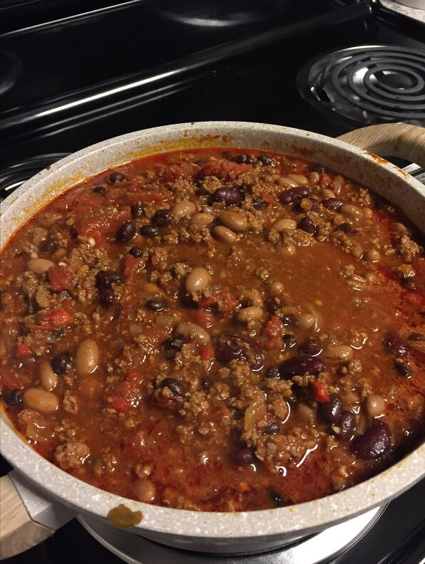

This is the easiest chili recipe, and it is delicious and sure to please everyone. Using home canned tomatoes gives the best flavor, but is not necessary. Enjoy.
Combine ground beef, onion, and garlic in large stockpot. Cook and stir over medium heat until beef is brown. Drain.
Stir in chili powder, salt, oregano, tomatoes, and tomato sauce; break up tomatoes while stirring. Heat to boiling, reduce heat to simmer, and cover. Cook, stirring occasionally, for 1 hour.
Stir in beans. Simmer, uncovered, for 20 minutes; stir occasionally.